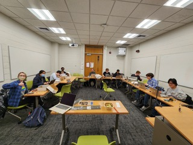
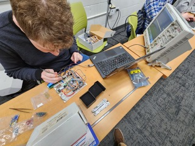
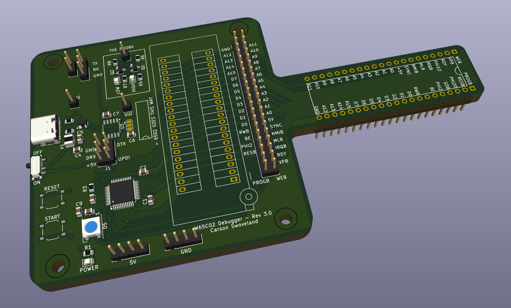
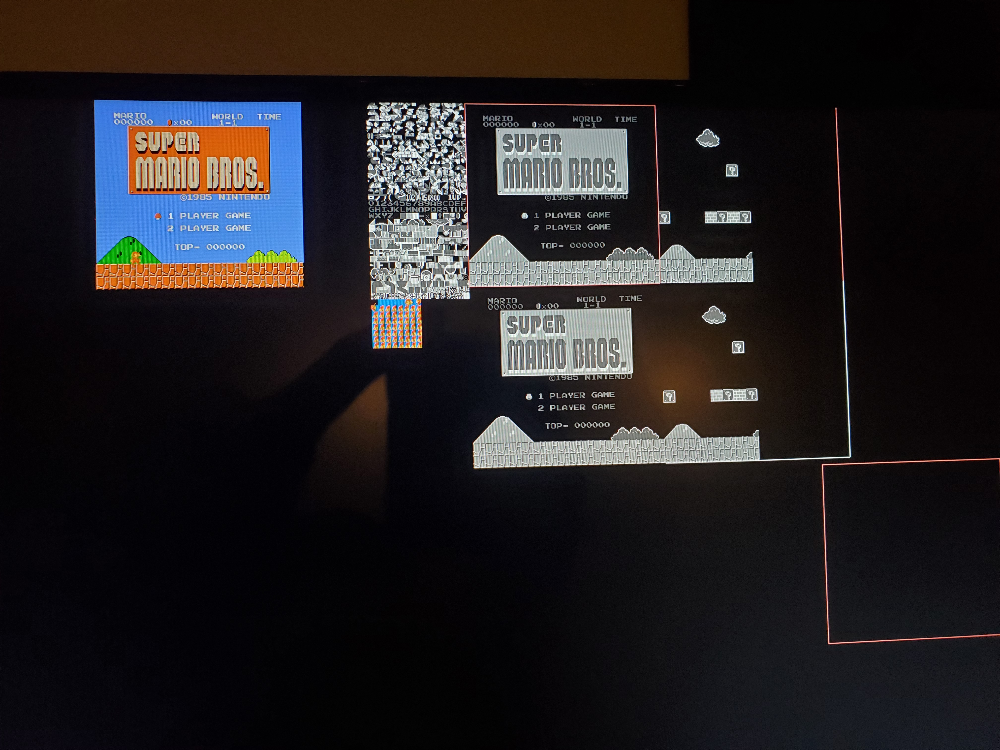
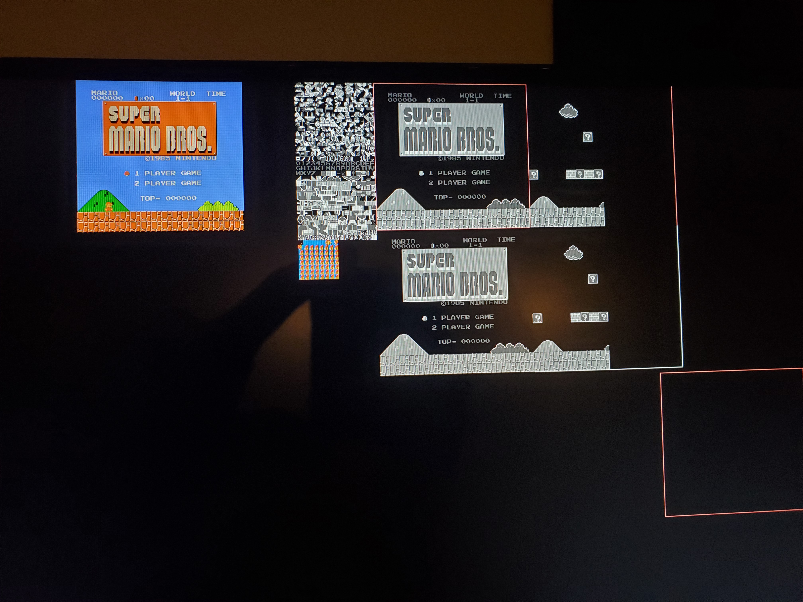

Overview
"Build Your Own Breadboard Computer" (BYOBC) is a course that I teach as part of CMU's Student College. I am currently in my third semester teaching it.
In the course, students build a complete computer with RAM, ROM, a serial port, and a screen. There is no expectation of prior electronics experience.
 The course features guest lectures from the CEO of Western Design Center Bill Mensch, connections to modern computer design, an entirely free-choice final project, and the ability to keep the whole computer afterwards.
As part of developing the course I created a debugger board, an ATMega4809-based PCB that simulates the entire 6502 processor, while also providing EEPROM programming, a serial connection, and a rudimentary logic analyzer affectionately called "The Probe." It connects to a laptop over a USB-C cable to provide a GDB-like interface to students' computers.
History
I've built about 3 of these computers before myself, which is part of the reason why I decided to teach the class. My most interesting attempt used a 6502 and about two dozen 74-series logic chips to recreate the 2A03 processor used in the Nintendo Entertainment System. By attaching a Raspberry Pi to the board, I could make it play Super Mario Bros, as shown below.
 

I'd like to revisit the breadboard NES project at some point, now that I have a better idea of what's causing some of the timing problems. Maybe I'll design it out beforehand and make a proper PCB for it.